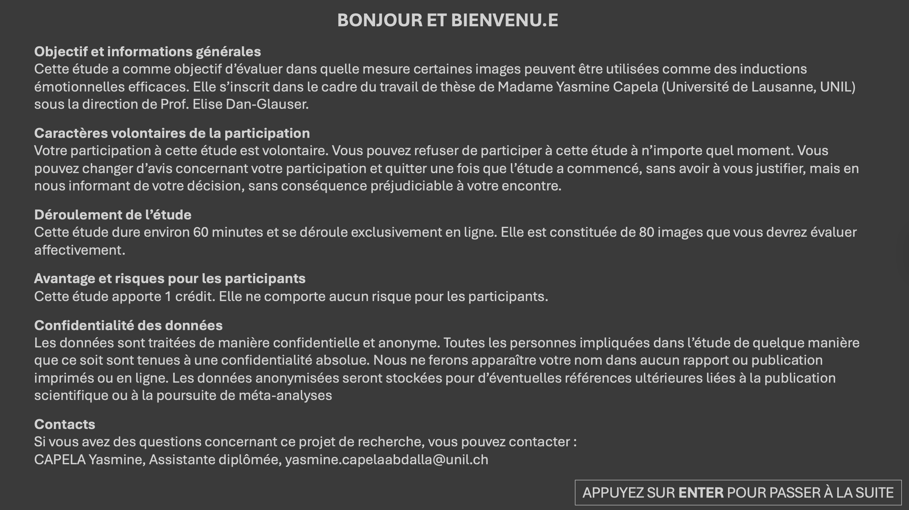
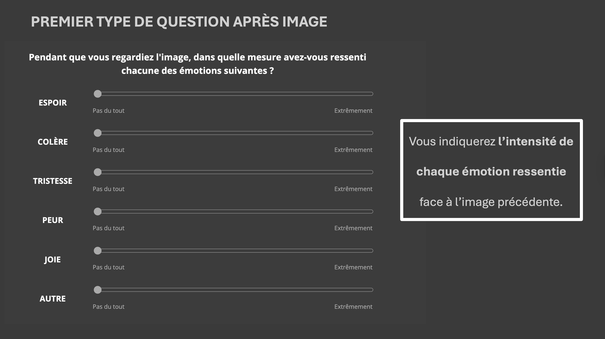
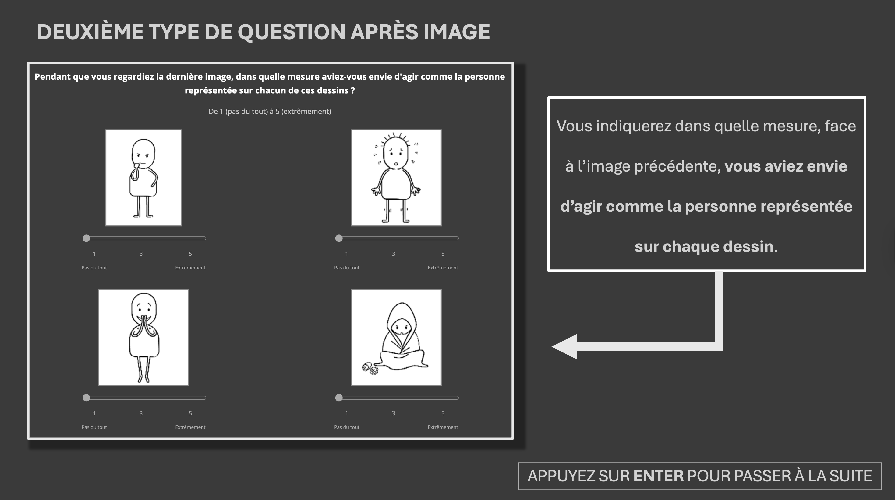
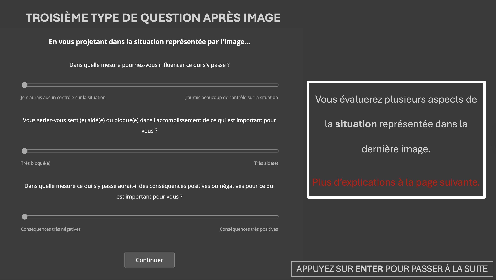
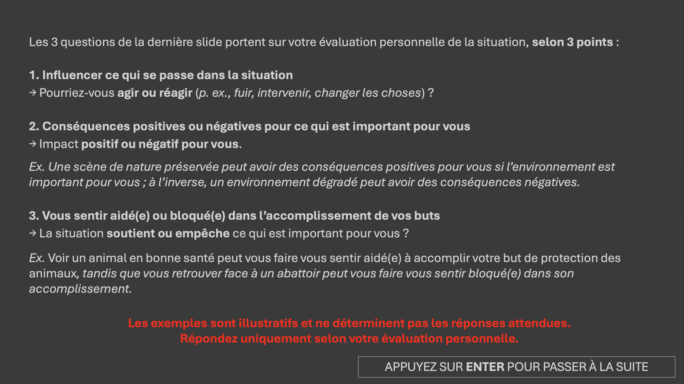
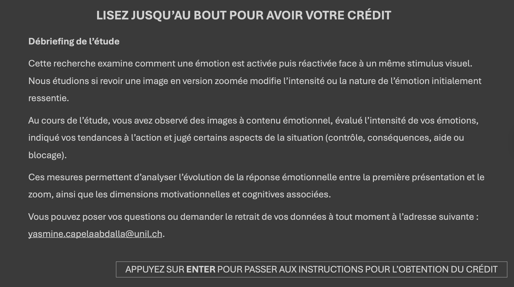

<!DOCTYPE html>
<html lang="fr">
<head>
  <meta charset="UTF-8">
  <title>YC5 – Expérience</title>

  <!-- jsPsych 7 — URLs officielles -->
  <script src="https://unpkg.com/jspsych@7.3.4"></script>
  <script src="https://unpkg.com/@jspsych/plugin-html-keyboard-response@1.1.3"></script>
  <script src="https://unpkg.com/@jspsych/plugin-canvas-keyboard-response@1.1.3"></script>
  <script src="https://unpkg.com/@jspsych/plugin-survey-html-form@1.0.3"></script>
  <script src="https://unpkg.com/@jspsych/plugin-preload@1.1.3"></script>
  <link href="https://unpkg.com/jspsych@7.3.4/css/jspsych.css" rel="stylesheet">

  <style>
/* =========================================================
   Marque centrale (50%) sur TOUS les sliders (émotion/situation/DAT)
   ========================================================= */

/* Les wrappers doivent être positionnés pour accueillir la tick */
.emo-slider-wrap,
.sit-slider-wrap,
.dat-slider-wrap {
  position: relative;
}

/* La tick centrale */
.emo-slider-wrap::before,
.sit-slider-wrap::before,
.dat-slider-wrap::before {
  content: "";
  position: absolute;
  left: 50%;
  transform: translateX(-50%);
  top: 9px;
  width: 2px;
  height: 14px;
  background: #ffffff;
  opacity: 0.8;
  pointer-events: none;
  border-radius: 1px;
}

    /* ---- Fond sombre ---- */
    body { background: #3c3c3c; margin: 0; padding: 0; }
    .jspsych-display-element { background: #3c3c3c; }
    .jspsych-content-wrapper { background: #3c3c3c; }

    /* ---- Croix de fixation ---- */
    .fixation { font-size: 80px; color: #ffffff; }

    /* ---- Modules Émotion / Situation (sliders HTML) ---- */
    .module-container { color:#fff; max-width:700px; margin:0 auto; padding:10px; }
    .module-header { font-size:18px; font-weight:bold; margin-bottom:20px; line-height:1.5; }
    .emo-row, .sit-row { display:flex; align-items:center; margin-bottom:18px; gap:20px; }
    .emo-label { font-size:16px; font-weight:bold; width:120px; flex-shrink:0; }
    .emo-slider-wrap, .sit-slider-wrap { flex:1; }
    .sit-question { font-size:15px; margin-bottom:8px; }

    /* ---- Module Situation (corrigé : sliders même largeur) ---- */
    .sit-row {
      width: 100%;
      flex-direction: column;
      align-items: stretch;
    }
    .sit-question { width: 100%; }
    .sit-slider-wrap { width: 100%; }

    .emo-slider-wrap input[type="range"], .sit-slider-wrap input[type="range"] { width:100%; accent-color:#aaa; }
    .slider-tick-labels { display:flex; justify-content:space-between; font-size:12px; color:#aaa; margin-top:3px; }
    .error-msg { color:#ff6666; font-size:14px; margin-top:10px; }
    .jspsych-btn { background:#555; color:#fff; border:1px solid #aaa; padding:10px 30px;
                   font-size:16px; cursor:pointer; margin-top:20px; border-radius:4px; }
    .jspsych-btn:hover { background:#777; }

    /* ---- Module DAT ---- */
    #dat-container { color: #ffffff; text-align: center; max-width: 1000px; margin: 0 auto; }
    #dat-container .dat-header { font-size: 18px; font-weight: bold; margin-bottom: 8px; }
    #dat-container .dat-subheader { font-size: 15px; margin-bottom: 24px; color: #cccccc; }
    .dat-grid { display: grid; grid-template-columns: 1fr 1fr; gap: 30px 60px;
                justify-items: center; margin-bottom: 20px; }
    .dat-cell { display: flex; flex-direction: column; align-items: center; width: 300px; }
    .dat-cell img { max-width: 280px; max-height: 200px; object-fit: contain;
                    border: 2px solid #888; background: #222; }
    .dat-cell .dat-slider-wrap { width: 260px; margin-top: 12px; }
    .dat-cell input[type="range"] { width: 100%; accent-color: #aaa; }
    .dat-tick-labels { display: flex; justify-content: space-between;
                       font-size: 12px; color: #aaa; margin-top: 2px; }
    #dat-error { color: #ff6666; font-size: 15px; margin-top: 10px; display: none; }

    /* ---- Canvas plein écran ---- */
    canvas { display: block; margin: 0 auto; }
  </style>
</head>

<body>
<script>
"use strict";

/* ==========================================================================
   SECTION 1 — CONFIGURATION
   ========================================================================== */

const CFG = {
  IMG_BASE    : 'images/',
  ZOOM_FACTOR : 1.5,
  FIX_MS      : 2000,
  IMG_MS      : 8000,
  BG_COLOR    : '#3c3c3c',
};

/* ---------- Dessins DAT ---------- */
const DAT_DRAWINGS = {
  approach      : [ 'dat_images/dat1/ApR1.png', 'dat_images/dat1/ApR2.png' ],
  confrontation : [ 'dat_images/dat2/ApT1.png', 'dat_images/dat2/ApT2.png' ],
  withdraw      : [ 'dat_images/dat3/AvR1.png', 'dat_images/dat3/AvR2.png' ],
  freeze        : [ 'dat_images/dat4/AvT1.png', 'dat_images/dat4/AvT2.png' ],
};

/* ==========================================================================
   SECTION 2 — LISTE D'IMAGES
   ==========================================================================
   Chaque objet : { emotion, image_id, filename, folder, zoomX, zoomY }
   zoomX / zoomY sont en pixels dans l'image originale.
   ========================================================================== */

const IMAGE_LIST = [
  {emotion:"sadness",image_id:"sadness_00001.JPG",filename:"sadness_00001.JPG",folder:"sadness",zoomX:1034.8,zoomY:268.07},
  {emotion:"sadness",image_id:"sadness_00005.jpg",filename:"sadness_00005.jpg",folder:"sadness",zoomX:968.76,zoomY:362.42},
  {emotion:"sadness",image_id:"sadness_00009.jpg",filename:"sadness_00009.jpg",folder:"sadness",zoomX:1171.61,zoomY:376.57},
  {emotion:"sadness",image_id:"sadness_00010.jpg",filename:"sadness_00010.jpg",folder:"sadness",zoomX:1072.54,zoomY:617.16},
  {emotion:"sadness",image_id:"sadness_00011.jpg",filename:"sadness_00011.jpg",folder:"sadness",zoomX:655.05,zoomY:454.41},
  {emotion:"sadness",image_id:"sadness_00012.jpg",filename:"sadness_00012.jpg",folder:"sadness",zoomX:1020.65,zoomY:621.88},
  {emotion:"sadness",image_id:"sadness_00016.jpg",filename:"sadness_00016.jpg",folder:"sadness",zoomX:1048.95,zoomY:454.41},
  {emotion:"sadness",image_id:"sadness_00018.jpg",filename:"sadness_00018.jpg",folder:"sadness",zoomX:1025.36,zoomY:390.72},
  {emotion:"sadness",image_id:"sadness_00019.jpg",filename:"sadness_00019.jpg",folder:"sadness",zoomX:881.48,zoomY:428.46},
  {emotion:"sadness",image_id:"sadness_00022.jpg",filename:"sadness_00022.jpg",folder:"sadness",zoomX:973.47,zoomY:473.28},
  {emotion:"sadness",image_id:"sadness_00053.jpg",filename:"sadness_00053.jpg",folder:"sadness",zoomX:982.91,zoomY:428.46},
  {emotion:"sadness",image_id:"sadness_00054.jpg",filename:"sadness_00054.jpg",folder:"sadness",zoomX:770.62,zoomY:614.8},
  {emotion:"sadness",image_id:"sadness_00059.jpg",filename:"sadness_00059.jpg",folder:"sadness",zoomX:1023.01,zoomY:430.82},
  {emotion:"sadness",image_id:"sadness_00063.jpg",filename:"sadness_00063.jpg",folder:"sadness",zoomX:1107.92,zoomY:511.02},
  {emotion:"sadness",image_id:"sadness_00068.jpg",filename:"sadness_00068.jpg",folder:"sadness",zoomX:900.35,zoomY:603.01},
  {emotion:"sadness",image_id:"sadness_00071.jpg",filename:"sadness_00071.jpg",folder:"sadness",zoomX:949.89,zoomY:473.28},
  {emotion:"sadness",image_id:"sadness_00073.jpg",filename:"sadness_00073.jpg",folder:"sadness",zoomX:966.4,zoomY:661.97},
  {emotion:"sadness",image_id:"sadness_00074.jpg",filename:"sadness_00074.jpg",folder:"sadness",zoomX:931.02,zoomY:619.52},
  {emotion:"sadness",image_id:"sadness_00076.jpg",filename:"sadness_00076.jpg",folder:"sadness",zoomX:1204.63,zoomY:544.04},
  {emotion:"sadness",image_id:"sadness_00078.jpg",filename:"sadness_00078.jpg",folder:"sadness",zoomX:879.12,zoomY:496.86},
  {emotion:"sadness",image_id:"sadness_00079.jpg",filename:"sadness_00079.jpg",folder:"sadness",zoomX:961.68,zoomY:619.52},
  {emotion:"sadness",image_id:"sadness_00084.jpg",filename:"sadness_00084.jpg",folder:"sadness",zoomX:905.07,zoomY:598.29},
  {emotion:"sadness",image_id:"sadness_00086.jpg",filename:"sadness_00086.jpg",folder:"sadness",zoomX:902.71,zoomY:480.35},
  {emotion:"sadness",image_id:"sadness_00087.png",filename:"sadness_00087.png",folder:"sadness",zoomX:850.82,zoomY:605.36},
  {emotion:"sadness",image_id:"sadness_00088.png",filename:"sadness_00088.png",folder:"sadness",zoomX:992.34,zoomY:716.22},
  {emotion:"sadness",image_id:"sadness_00089.jpg",filename:"sadness_00089.jpg",folder:"sadness",zoomX:954.6,zoomY:419.03},
  {emotion:"sadness",image_id:"sadness_00091.png",filename:"sadness_00091.png",folder:"sadness",zoomX:824.87,zoomY:527.53},
  {emotion:"sadness",image_id:"sadness_00093.jpg",filename:"sadness_00093.jpg",folder:"sadness",zoomX:940.45,zoomY:695.0},
  {emotion:"sadness",image_id:"sadness_00094.jpg",filename:"sadness_00094.jpg",folder:"sadness",zoomX:784.78,zoomY:664.33},
  {emotion:"sadness",image_id:"sadness_00095.jpg",filename:"sadness_00095.jpg",folder:"sadness",zoomX:848.46,zoomY:496.86},
  {emotion:"sadness",image_id:"sadness_00096.png",filename:"sadness_00096.png",folder:"sadness",zoomX:1093.77,zoomY:577.06},
  {emotion:"sadness",image_id:"sadness_00102.png",filename:"sadness_00102.png",folder:"sadness",zoomX:938.09,zoomY:569.98},
  {emotion:"sadness",image_id:"sadness_00106.png",filename:"sadness_00106.png",folder:"sadness",zoomX:985.27,zoomY:577.06},
  {emotion:"sadness",image_id:"sadness_00108.png",filename:"sadness_00108.png",folder:"sadness",zoomX:1048.95,zoomY:610.08},
  {emotion:"sadness",image_id:"sadness_00111.png",filename:"sadness_00111.png",folder:"sadness",zoomX:1072.54,zoomY:636.03},
  {emotion:"sadness",image_id:"sadness_00112.png",filename:"sadness_00112.png",folder:"sadness",zoomX:1096.13,zoomY:569.98},
  {emotion:"sadness",image_id:"sadness_00113.png",filename:"sadness_00113.png",folder:"sadness",zoomX:902.71,zoomY:496.86},
  {emotion:"sadness",image_id:"sadness_00117.png",filename:"sadness_00117.png",folder:"sadness",zoomX:756.47,zoomY:621.88},
  {emotion:"sadness",image_id:"sadness_00132.png",filename:"sadness_00132.png",folder:"sadness",zoomX:1004.14,zoomY:569.98},
  {emotion:"sadness",image_id:"sadness_00142.png",filename:"sadness_00142.png",folder:"sadness",zoomX:1096.13,zoomY:699.71},
  {emotion:"hope",image_id:"hope_00002.jpg",filename:"hope_00002.jpg",folder:"hope",zoomX:945.17,zoomY:598.29},
  {emotion:"hope",image_id:"hope_00002.png",filename:"hope_00002.png",folder:"hope",zoomX:1091.41,zoomY:487.43},
  {emotion:"hope",image_id:"hope_00004.jpeg",filename:"hope_00004.jpeg",folder:"hope",zoomX:952.24,zoomY:362.42},
  {emotion:"hope",image_id:"hope_00009.jpg",filename:"hope_00009.jpg",folder:"hope",zoomX:907.43,zoomY:386.0},
  {emotion:"hope",image_id:"hope_00012.png",filename:"hope_00012.png",folder:"hope",zoomX:1051.31,zoomY:518.09},
  {emotion:"hope",image_id:"hope_00014.jpg",filename:"hope_00014.jpg",folder:"hope",zoomX:747.04,zoomY:647.82},
  {emotion:"hope",image_id:"hope_00016.jpg",filename:"hope_00016.jpg",folder:"hope",zoomX:798.93,zoomY:433.18},
  {emotion:"hope",image_id:"hope_00016.png",filename:"hope_00016.png",folder:"hope",zoomX:1020.65,zoomY:475.64},
  {emotion:"hope",image_id:"hope_00017.jpg",filename:"hope_00017.jpg",folder:"hope",zoomX:890.92,zoomY:480.35},
  {emotion:"hope",image_id:"hope_00019.jpg",filename:"hope_00019.jpg",folder:"hope",zoomX:978.19,zoomY:640.75},
  {emotion:"hope",image_id:"hope_00019.png",filename:"hope_00019.png",folder:"hope",zoomX:1058.39,zoomY:371.85},
  {emotion:"hope",image_id:"hope_00026.jpg",filename:"hope_00026.jpg",folder:"hope",zoomX:952.24,zoomY:532.24},
  {emotion:"hope",image_id:"hope_00041.png",filename:"hope_00041.png",folder:"hope",zoomX:961.68,zoomY:532.24},
  {emotion:"hope",image_id:"hope_00044.jpg",filename:"hope_00044.jpg",folder:"hope",zoomX:765.91,zoomY:737.45},
  {emotion:"hope",image_id:"hope_00050.png",filename:"hope_00050.png",folder:"hope",zoomX:949.89,zoomY:437.9},
  {emotion:"hope",image_id:"hope_00051.jpg",filename:"hope_00051.jpg",folder:"hope",zoomX:1145.66,zoomY:522.81},
  {emotion:"hope",image_id:"hope_00053.jpg",filename:"hope_00053.jpg",folder:"hope",zoomX:1178.68,zoomY:558.19},
  {emotion:"hope",image_id:"hope_00059.jpg",filename:"hope_00059.jpg",folder:"hope",zoomX:782.42,zoomY:463.84},
  {emotion:"hope",image_id:"hope_00062.png",filename:"hope_00062.png",folder:"hope",zoomX:1048.95,zoomY:437.9},
  {emotion:"hope",image_id:"hope_00063.jpg",filename:"hope_00063.jpg",folder:"hope",zoomX:732.88,zoomY:607.72},
  {emotion:"hope",image_id:"hope_00063.png",filename:"hope_00063.png",folder:"hope",zoomX:905.07,zoomY:430.82},
  {emotion:"hope",image_id:"hope_00064.jpg",filename:"hope_00064.jpg",folder:"hope",zoomX:1037.16,zoomY:423.74},
  {emotion:"hope",image_id:"hope_00073.jpg",filename:"hope_00073.jpg",folder:"hope",zoomX:1006.5,zoomY:444.97},
  {emotion:"hope",image_id:"hope_00075.jpg",filename:"hope_00075.jpg",folder:"hope",zoomX:959.32,zoomY:494.5},
  {emotion:"hope",image_id:"hope_00076.jpg",filename:"hope_00076.jpg",folder:"hope",zoomX:721.09,zoomY:480.35},
  {emotion:"hope",image_id:"hope_00077.jpg",filename:"hope_00077.jpg",folder:"hope",zoomX:796.57,zoomY:565.27},
  {emotion:"hope",image_id:"hope_00078.jpg",filename:"hope_00078.jpg",folder:"hope",zoomX:1091.41,zoomY:437.9},
  {emotion:"hope",image_id:"hope_00081.jpg",filename:"hope_00081.jpg",folder:"hope",zoomX:1048.95,zoomY:565.27},
  {emotion:"hope",image_id:"hope_00083.jpg",filename:"hope_00083.jpg",folder:"hope",zoomX:975.83,zoomY:555.83},
  {emotion:"hope",image_id:"hope_00084.jpg",filename:"hope_00084.jpg",folder:"hope",zoomX:770.62,zoomY:364.78},
  {emotion:"hope",image_id:"hope_00087.jpg",filename:"hope_00087.jpg",folder:"hope",zoomX:1079.62,zoomY:452.05},
  {emotion:"hope",image_id:"hope_00094.png",filename:"hope_00094.png",folder:"hope",zoomX:1051.31,zoomY:480.35},
  {emotion:"hope",image_id:"hope_00112.png",filename:"hope_00112.png",folder:"hope",zoomX:968.76,zoomY:529.89},
  {emotion:"hope",image_id:"hope_00115.png",filename:"hope_00115.png",folder:"hope",zoomX:1074.9,zoomY:518.09},
  {emotion:"hope",image_id:"hope_00117.jpg",filename:"hope_00117.jpg",folder:"hope",zoomX:1067.82,zoomY:456.77},
  {emotion:"hope",image_id:"hope_00118.jpg",filename:"hope_00118.jpg",folder:"hope",zoomX:839.03,zoomY:428.46},
  {emotion:"hope",image_id:"hope_00121.jpg",filename:"hope_00121.jpg",folder:"hope",zoomX:1148.02,zoomY:588.85},
  {emotion:"hope",image_id:"hope_00127.jpg",filename:"hope_00127.jpg",folder:"hope",zoomX:1251.8,zoomY:511.02},
  {emotion:"hope",image_id:"hope_00133.jpg",filename:"hope_00133.jpg",folder:"hope",zoomX:1015.93,zoomY:673.77},
  {emotion:"hope",image_id:"hope_00150.jpeg",filename:"hope_00150.jpeg",folder:"hope",zoomX:914.5,zoomY:565.27},
];

/* ==========================================================================
   SECTION 3 — UTILITAIRES
   ========================================================================== */

function getCachedImage(src) {
  const img = new Image();
  img.src = src;
  return img;
}

function drawImageCentered(canvas, imgSrc) {
  const ctx = canvas.getContext('2d');
  ctx.fillStyle = CFG.BG_COLOR;
  ctx.fillRect(0, 0, canvas.width, canvas.height);
  const img = getCachedImage(imgSrc);
  const go = () => {
    const scale = Math.min(canvas.width / img.naturalWidth, canvas.height / img.naturalHeight);
    const dw = img.naturalWidth  * scale;
    const dh = img.naturalHeight * scale;
    const dx = (canvas.width  - dw) / 2;
    const dy = (canvas.height - dh) / 2;
    ctx.drawImage(img, dx, dy, dw, dh);
  };
  if (img.complete && img.naturalWidth) { go(); }
  else { img.onload = go; }
}

function drawImageZoomed(canvas, imgSrc, zoomX, zoomY) {
  const ctx  = canvas.getContext('2d');
  const zf   = CFG.ZOOM_FACTOR;
  ctx.fillStyle = CFG.BG_COLOR;
  ctx.fillRect(0, 0, canvas.width, canvas.height);
  const img = getCachedImage(imgSrc);
  const go = () => {
    const IW = img.naturalWidth, IH = img.naturalHeight;
    const srcW = IW / zf, srcH = IH / zf;
    let srcX = zoomX - srcW / 2;
    let srcY = zoomY - srcH / 2;
    srcX = Math.max(0, Math.min(srcX, IW - srcW));
    srcY = Math.max(0, Math.min(srcY, IH - srcH));
    ctx.drawImage(img, srcX, srcY, srcW, srcH, 0, 0, canvas.width, canvas.height);
  };
  if (img.complete && img.naturalWidth) { go(); }
  else { img.onload = go; }
}

function shuffle(arr) {
  const a = [...arr];
  for (let i = a.length - 1; i > 0; i--) {
    const j = Math.floor(Math.random() * (i + 1));
    [a[i], a[j]] = [a[j], a[i]];
  }
  return a;
}

function randomPick(arr) {
  return arr[Math.floor(Math.random() * arr.length)];
}

/* ==========================================================================
   (Optionnel) SONA — récupérer sona_id pour le stocker dans les données
   NOTE: ici, on NE redirige PAS automatiquement vers SONA, pour rester cohérent
   avec le texte "validé après réception du fichier".
   ========================================================================== */

function getSonaIdFromUrl() {
  try {
    const params = new URLSearchParams(window.location.search);
    const v = params.get('sona_id');
    return v ? v : "";
  } catch (e) {
    return "";
  }
}

/* ==========================================================================
   SECTION 4 — CONSTRUCTEURS DE TRIALS
   ========================================================================== */

const EMOTION_DEFS = [
  { name: 'joie',      label: 'JOIE' },
  { name: 'colere',    label: 'COLÈRE' },
  { name: 'espoir',    label: 'ESPOIR' },
  { name: 'tristesse', label: 'TRISTESSE' },
  { name: 'peur',      label: 'PEUR' },
  { name: 'autre',     label: 'AUTRE' },
];

const SIT_DEFS = [
  {
    name  : 'sit_controle',
    text  : 'Dans quelle mesure pourriez-vous influencer ce qui s\'y passe ?',
    left  : 'Je n\'aurais aucun contrôle sur la situation',
    right : 'J\'aurais beaucoup de contrôle sur la situation',
  },
  {
    name  : 'sit_aide',
    text  : 'Vous seriez-vous senti(e) aidé(e) ou bloqué(e) dans l\'accomplissement de ce qui est important pour vous ?',
    left  : 'Très bloqué(e)',
    right : 'Très aidé(e)',
  },
  {
    name  : 'sit_consequences',
    text  : 'Dans quelle mesure ce qui s\'y passe aurait-il des conséquences positives ou négatives pour ce qui est important pour vous ?',
    left  : 'Conséquences très négatives',
    right : 'Conséquences très positives',
  },
];

function makeFixation() {
  return {
    type    : jsPsychHtmlKeyboardResponse,
    stimulus: '<div class="fixation">+</div>',
    choices : 'NO_KEYS',
    trial_duration: CFG.FIX_MS,
    data    : { phase: 'fixation' },
  };
}

function makeImageTrial(imgData, trialNum) {
  const src = CFG.IMG_BASE + imgData.folder + '/' + imgData.filename;
  return {
    type        : jsPsychCanvasKeyboardResponse,
    canvas_size : [window.screen.height, window.screen.width],
    stimulus    : (canvas) => drawImageCentered(canvas, src),
    choices     : 'NO_KEYS',
    trial_duration: CFG.IMG_MS,
    data        : {
      phase      : 'image_normal',
      trial_num  : trialNum,
      image_id   : imgData.image_id,
      emotion_type: imgData.emotion,
    },
  };
}

function makeZoomTrial(imgData, trialNum) {
  const src = CFG.IMG_BASE + imgData.folder + '/' + imgData.filename;
  return {
    type        : jsPsychCanvasKeyboardResponse,
    canvas_size : [window.screen.height, window.screen.width],
    stimulus    : (canvas) => drawImageZoomed(canvas, src, imgData.zoomX, imgData.zoomY),
    choices     : 'NO_KEYS',
    trial_duration: CFG.IMG_MS,
    data        : {
      phase      : 'image_zoom',
      trial_num  : trialNum,
      image_id   : imgData.image_id,
      emotion_type: imgData.emotion,
      zoomX      : imgData.zoomX,
      zoomY      : imgData.zoomY,
    },
  };
}

/* ---- Module Émotion (6 sliders, AUTRE toujours dernier) ---- */
function makeEmotionTrial(imgData, trialNum, phaseLabel) {
  function buildHtml() {
    const coreShuf = shuffle([0,1,2,3,4]);
    const order = [...coreShuf, 5];
    window._emoOrder = order;

    const rows = order.map(i => {
      const def = EMOTION_DEFS[i];
      return '<div class="emo-row"><div class="emo-label">' + def.label + '</div>' +
        '<div class="emo-slider-wrap"><input type="range" name="' + def.name + '" class="emo-slider" min="0" max="100" step="0.1" value="0">' +
        '<div class="slider-tick-labels"><span>Pas du tout</span><span>Extrêmement</span></div></div></div>';
    }).join('');

    return '<div class="module-container"><p class="module-header">Pendant que vous regardiez l\'image, dans quelle mesure avez-vous ressenti chacune des émotions suivantes ?</p>' + rows +
      '<div id="emo-error" class="error-msg" style="display:none">Merci de déplacer tous les curseurs avant de continuer.</div></div>';
  }

  return {
    type: jsPsychSurveyHtmlForm,
    html: buildHtml,
    button_label: 'Continuer',
    on_load: function() {
      const moved = new Set();
      document.querySelectorAll('.emo-slider').forEach(function(s) {
        s.addEventListener('input', function() { moved.add(s.name); });
      });
      const btn = document.getElementById('jspsych-survey-html-form-next');
      if (btn) btn.addEventListener('click', function(e) {
        if (moved.size < 6) {
          e.preventDefault();
          e.stopImmediatePropagation();
          document.getElementById('emo-error').style.display='block';
        }
      }, true);
    },
    on_finish: function(data) {
      data.phase = 'emotion_' + (phaseLabel || 'pre_zoom');
      data.trial_num = trialNum;
      data.image_id = imgData.image_id;
      data.emotion_type = imgData.emotion;
      data.emotion_order = (window._emoOrder||[]).map(function(i){ return EMOTION_DEFS[i].name; }).join(',');
    },
  };
}

/* ---- Module DAT (4 dessins + 4 sliders 1-5, grille 2x2) ---- */
function makeDatTrial(imgData, phase, trialNum) {
  function buildDatHtml() {
    const catKeys  = shuffle(['approach','confrontation','freeze','withdraw']);
    const drawings = catKeys.map(k => randomPick(DAT_DRAWINGS[k]));
    window._datState = { catKeys, drawings };

    const header =
      'Pendant que vous regardiez la dernière image, dans quelle mesure aviez-vous envie d\'agir comme la personne représentée sur chacun de ces dessins ?';

    const cells = drawings.map((src, i) => `
      <div class="dat-cell">
        
        <div class="dat-slider-wrap">
          <input type="range" name="dat_${catKeys[i]}"
                 class="dat-slider required-slider"
                 data-drawing="${src}"
                 min="1" max="5" step="0.1" value="1">
          <div class="dat-tick-labels">
            <span>1<br><small>Pas du tout</small></span>
            <span>3</span>
            <span>5<br><small>Extrêmement</small></span>
          </div>
        </div>
      </div>`).join('');

    return `
      <div id="dat-container">
        <p class="dat-header">${header}</p>
        <p class="dat-subheader">De 1 (pas du tout) à 5 (extrêmement)</p>
        <div class="dat-grid">${cells}</div>
        <div id="dat-error">Merci de déplacer tous les curseurs avant de continuer.</div>
      </div>`;
  }

  return {
    type        : jsPsychSurveyHtmlForm,
    html        : buildDatHtml,
    button_label: 'Continuer',
    on_load     : function() {
      const moved = new Set();
      document.querySelectorAll('.required-slider').forEach(s => {
        s.addEventListener('input', () => moved.add(s.name));
      });
      const btn = document.getElementById('jspsych-survey-html-form-next');
      if (btn) {
        btn.addEventListener('click', function(e) {
          if (moved.size < 4) {
            e.preventDefault();
            e.stopImmediatePropagation();
            document.getElementById('dat-error').style.display = 'block';
          }
        }, true);
      }
    },
    on_finish   : function(data) {
      data.phase        = 'dat_' + phase;
      data.trial_num    = trialNum;
      data.image_id     = imgData.image_id;
      data.emotion_type = imgData.emotion;
      if (window._datState) {
        data.dat_order    = window._datState.catKeys.join(',');
        data.dat_drawings = window._datState.drawings.join(',');
      }
    },
  };
}

/* ---- Module Situation (3 sliders HTML, ordre aleatoire) ---- */
function makeSituationTrial(imgData, phase, trialNum) {
  function buildHtml() {
    const order = shuffle([0,1,2]);
    window._sitOrder = order;
    const rows = order.map(i => {
      const def = SIT_DEFS[i];
      return '<div class="sit-row"><p class="sit-question">' + def.text + '</p>' +
        '<div class="sit-slider-wrap"><input type="range" name="' + def.name + '" class="sit-slider" min="0" max="100" step="0.1" value="0">' +
        '<div class="slider-tick-labels"><span>' + def.left + '</span><span>' + def.right + '</span></div></div></div>';
    }).join('');
    return '<div class="module-container"><p class="module-header">En vous projetant dans la situation représentée par l\'image…</p>' + rows +
      '<div id="sit-error" class="error-msg" style="display:none">Merci de déplacer tous les curseurs avant de continuer.</div></div>';
  }

  return {
    type: jsPsychSurveyHtmlForm,
    html: buildHtml,
    button_label: 'Continuer',
    on_load: function() {
      const moved = new Set();
      document.querySelectorAll('.sit-slider').forEach(function(s) {
        s.addEventListener('input', function() { moved.add(s.name); });
      });
      const btn = document.getElementById('jspsych-survey-html-form-next');
      if (btn) btn.addEventListener('click', function(e) {
        if (moved.size < 3) {
          e.preventDefault();
          e.stopImmediatePropagation();
          document.getElementById('sit-error').style.display='block';
        }
      }, true);
    },
    on_finish: function(data) {
      data.phase = 'situation_' + phase;
      data.trial_num = trialNum;
      data.image_id = imgData.image_id;
      data.emotion_type = imgData.emotion;
      data.sit_order = (window._sitOrder||[]).map(function(i){ return SIT_DEFS[i].name; }).join(',');
    },
  };
}

/* ==========================================================================
   SECTION 5 — TIMELINE
   ========================================================================== */

const jsPsych = initJsPsych({
  on_finish: function() {
    // Téléchargement CSV à la fin
    saveData();
  },
});

const sona_id_for_data = getSonaIdFromUrl();
if (sona_id_for_data) {
  jsPsych.data.addProperties({ sona_id: sona_id_for_data });
}

/* ---- Sélection 40 images uniques : 20 hope + 20 sadness ---- */
function sampleWithoutReplacement(arr, n) {
  if (n > arr.length) {
    throw new Error(`Impossible de tirer ${n} éléments : seulement ${arr.length} disponibles.`);
  }
  return shuffle(arr).slice(0, n);
}

const hopePool = IMAGE_LIST.filter(d => d.emotion === 'hope');
const sadnessPool = IMAGE_LIST.filter(d => d.emotion === 'sadness');

const pickedHope = sampleWithoutReplacement(hopePool, 20);
const pickedSadness = sampleWithoutReplacement(sadnessPool, 20);

const shuffledImages = shuffle([...pickedHope, ...pickedSadness]); // 40 images uniques

/* Toutes les images à précharger (uniquement ces 40) */
const allImagePaths = shuffledImages.map(
  d => CFG.IMG_BASE + d.folder + '/' + d.filename
);

/* Liste des dessins DAT à précharger */
const allDatPaths = Object.values(DAT_DRAWINGS).flat();

/* Slides à précharger */
const SLIDE_PATHS = [
  'slides/slide_informations.png',  // ✅ ajouté
  'slides/slide1.png',
  'slides/slide2.png',
  'slides/slide3.png',
  'slides/slide4.png',
  'slides/slide5.png',
  'slides/slide6.png',
  'slides/slide7.png',
  'slides/debrief.png',
];

/* ----- Préchargement ----- */
const preload = {
  type  : jsPsychPreload,
  images: [...allImagePaths, ...allDatPaths, ...SLIDE_PATHS],
  show_progress_bar: true,
  message: '<p style="color:#fff">Chargement des images…</p>',
};

/* ----- Slide informations (Enter) ----- */
const informationSlide = {
  type: jsPsychHtmlKeyboardResponse,
  stimulus: '',
  choices: ['Enter']
};

/* ----- Slide consentement ----- */
const consentSlide = {
  type: jsPsychSurveyHtmlForm,
  html: `
    <div style="color:#fff; max-width:800px; margin:0 auto; font-size:18px; line-height:1.6; padding:20px; text-align:left;">
      <p><strong>Dans le cadre d'un consentement de participation, vous acceptez les points suivants.</strong></p>
      <p>Si vous ne consentez pas à une des deux affirmations, vous pouvez quitter la page :</p>
      <br>
      <p>1. L’utilisation des données à des fins scientifiques et la publication des résultats de la recherche dans des revues ou livres scientifiques, étant entendu que les données resteront anonymes et qu’aucune information ne sera donnée sur mon identité.</p>
      <br>
      <p>2. L’utilisation des données à des fins pédagogiques (cours et séminaires de formations d’étudiants ou de professionnels soumis au secret professionnel). L'anonymat reste préservé.</p>
      <br><br>
      <label>
        <input type="checkbox" name="consent" value="yes" required>
        Je consens aux deux affirmations.
      </label>
    </div>
  `,
  button_label: "Continuer",
  on_finish: function(data){
    data.phase = "consent";
  }
};

/* ----- Question sexe ----- */
const sexeQuestion = {
  type: jsPsychSurveyHtmlForm,
  html: `
    <div style="color:#fff; max-width:600px; margin:0 auto; font-size:18px; line-height:1.6; padding:20px;">
      <p><strong>Quel est votre sexe ?</strong></p>
      <label><input type="radio" name="sexe" value="Femme" required> Femme</label><br><br>
      <label><input type="radio" name="sexe" value="Homme"> Homme</label><br><br>
      <label><input type="radio" name="sexe" value="Autre"> Autre</label><br><br>
      <label><input type="radio" name="sexe" value="Ne souhaite pas répondre"> Ne souhaite pas répondre</label>
    </div>
  `,
  button_label: "Continuer",
  on_finish: function(data){
    data.phase = "demographics";
  }
};

/* ----- Slides d'introduction (1 à 6) ----- */
const introSlides = {
  timeline: [
    { type: jsPsychHtmlKeyboardResponse,
      stimulus: '',
      choices: ['Enter'] },
    { type: jsPsychHtmlKeyboardResponse,
      stimulus: '',
      choices: ['Enter'] },
    { type: jsPsychHtmlKeyboardResponse,
      stimulus: '',
      choices: ['Enter'] },
    { type: jsPsychHtmlKeyboardResponse,
      stimulus: '',
      choices: ['Enter'] },
    { type: jsPsychHtmlKeyboardResponse,
      stimulus: '',
      choices: ['Enter'] },
    { type: jsPsychHtmlKeyboardResponse,
      stimulus: '',
      choices: ['Enter'] },
  ],
};

/* ----- Slide progression (5 secondes) ----- */
function makeProgressSlide(count) {
  return {
    type: jsPsychHtmlKeyboardResponse,
    stimulus: `
      <div style="color:#fff; text-align:center; font-size:28px; line-height:1.6; padding:20px;">
        <p><strong>Bravo !</strong></p>
        <p>Vous avez accompli ${count}/80 images</p>
      </div>
    `,
    choices: 'NO_KEYS',
    trial_duration: 5000,
  };
}

/* ----- Boucle trials : 40 images uniques => 80 présentations (normal+zoom) ----- */
const trialTimeline = [];

shuffledImages.forEach((imgData, idx) => {
  const trialNum = idx + 1;

  trialTimeline.push(
    makeFixation(),
    makeImageTrial(imgData, trialNum),
    makeEmotionTrial(imgData, trialNum, 'pre_zoom'),
    makeDatTrial(imgData, 'pre_zoom', trialNum),
    makeSituationTrial(imgData, 'pre_zoom', trialNum),

    makeFixation(),
    makeZoomTrial(imgData, trialNum),
    makeEmotionTrial(imgData, trialNum, 'post_zoom'),
    makeDatTrial(imgData, 'post_zoom', trialNum),
    makeSituationTrial(imgData, trialNum, 'post_zoom')
  );

  if (trialNum % 10 === 0 && trialNum < 40) {
    trialTimeline.push(makeProgressSlide(trialNum * 2));
  }
});

/* ✅ FIN DE BOUCLE : afficher 80/80 */
trialTimeline.push(makeProgressSlide(80));

/* ✅ Slide debrief (sortie avec Enter) */
const debriefSlide = {
  type: jsPsychHtmlKeyboardResponse,
  stimulus: '',
  choices: ['Enter'],
  data: { phase: 'debrief' },
};

/* ==========================================================================
   ✅ Slide lien OneDrive (nouvel onglet) + Enter
   ========================================================================== */
const ONEDRIVE_UPLOAD_URL = "https://onedrive.live.com/?id=%2Fpersonal%2Fb82c449d30ad29f9%2FDocuments%2FYC6%5Fdata&viewid=ea523e3c%2D45c0%2D4b37%2Db11b%2De0846f5cee59&view=0";

const uploadLinkSlide = {
  type: jsPsychHtmlKeyboardResponse,
  stimulus: `
    <div style="color:#fff; max-width:980px; margin:0 auto; padding:40px; line-height:1.7; font-size:20px;">
      <p style="margin-bottom:18px;"><b>En cliquant sur ce lien, une nouvelle page s'ouvrira.</b></p>

      <p style="margin-bottom:18px;">
        <a href="${ONEDRIVE_UPLOAD_URL}" target="_blank" rel="noopener noreferrer"
           style="color:#9fd3ff; text-decoration:underline; font-size:22px;">
          Ouvrir la page OneDrive de dépôt
        </a>
      </p>

      <p style="margin-bottom:0;">
        Cliquez dessus, puis revenez sur l'onglet de l'expérience et appuyez sur <b>ENTER</b>
        pour les instructions d'obtention du crédit.
      </p>
    </div>
  `,
  choices: ['Enter'],
  data: { phase: 'upload_link' },
};

/* ==========================================================================
   ✅ Dernière slide d'instructions crédit (20s, NO_KEYS)
   ========================================================================== */
const creditInstructionsSlide = {
  type: jsPsychHtmlKeyboardResponse,
  stimulus: `
    <div style="color:#fff; max-width:980px; margin:0 auto; padding:40px; line-height:1.7; font-size:20px;">
      <p style="margin-bottom:18px;"><b>Cette page se fermera automatiquement.</b></p>

      <p style="margin-bottom:18px;">
        À ce moment-là, un fichier CSV sera téléchargé sur votre ordinateur :
        <b>YC6_data_&lt;horodatage&gt;.csv</b>
      </p>

      <p style="margin-bottom:18px;">
        <b>Important :</b><br>
        Veuillez déposer ce fichier sur la page OneDrive ouverte précédemment.
        (le lien se trouve également sur Moodle dans la section de l'expérience YC6)
      </p>

      <p style="margin-bottom:0;">
        Votre crédit de participation SONA sera validé après réception du fichier.
      </p>
    </div>
  `,
  choices: 'NO_KEYS',
  trial_duration: 20000,
  data: { phase: 'credit_instructions' },
};

/* ----- Timeline finale ----- */
jsPsych.run([
  preload,
  informationSlide,
  consentSlide,
  sexeQuestion,
  introSlides,
  ...trialTimeline,
  debriefSlide,
  uploadLinkSlide,
  creditInstructionsSlide
]);

/* ==========================================================================
   SECTION 6 — SAUVEGARDE DES DONNÉES (CSV)
   ========================================================================== */
function saveData() {

  const allData = jsPsych.data.get().values();

  const demo = allData.find(d => d.phase === "demographics");
  const sexe = demo?.response?.sexe || "";

  const imageTrials = allData
    .filter(d => d.phase === "image_normal" || d.phase === "image_zoom")
    .sort((a,b) => {
      if (a.trial_num !== b.trial_num) return a.trial_num - b.trial_num;
      const pa = (a.phase === "image_normal") ? 0 : 1;
      const pb = (b.phase === "image_normal") ? 0 : 1;
      return pa - pb;
    });

  const finalRows = [];

  imageTrials.forEach(imgTrial => {

    const trialNum = imgTrial.trial_num;
    const imageId = imgTrial.image_id;
    const imageType = imgTrial.emotion_type === "hope" ? "h" : "s";
    const imageFormat = imgTrial.phase === "image_normal" ? "original" : "zoomed";

    const emotionTrial = allData.find(d =>
      d.phase === `emotion_${imageFormat === "original" ? "pre_zoom" : "post_zoom"}`
      && d.trial_num === trialNum
    );

    const datTrial = allData.find(d =>
      d.phase === `dat_${imageFormat === "original" ? "pre_zoom" : "post_zoom"}`
      && d.trial_num === trialNum
    );

    const sitTrial = allData.find(d =>
      d.phase === `situation_${imageFormat === "original" ? "pre_zoom" : "post_zoom"}`
      && d.trial_num === trialNum
    );

    const emo = emotionTrial?.response || {};
    const dat = datTrial?.response || {};
    const sit = sitTrial?.response || {};

    finalRows.push([
      trialNum,
      sexe,
      imageId,
      imageType,
      imageFormat,

      emo.espoir || "",
      emo.tristesse || "",
      emo.peur || "",
      emo.colere || "",
      emo.joie || "",
      emo.autre || "",

      dat.dat_approach || "",
      dat.dat_confrontation || "",
      dat.dat_withdraw || "",
      dat.dat_freeze || "",

      sit.sit_controle || "",
      sit.sit_aide || "",
      sit.sit_consequences || ""
    ]);
  });

  const headers = [
    "num_trial",
    "sexe",
    "image_id",
    "image_type",
    "image_format",
    "curseur_espoir",
    "curseur_tristesse",
    "curseur_peur",
    "curseur_colere",
    "curseur_joie",
    "curseur_autre",
    "curseur_dat_approach",
    "curseur_dat_confrontation",
    "curseur_dat_withdraw",
    "curseur_dat_freeze",
    "curseur_sit_controle",
    "curseur_sit_aide",
    "curseur_sit_consequences"
  ];

  const csv = [
    headers.join(","),
    ...finalRows.map(r =>
      r.map(v => `"${String(v).replace(/"/g,'""')}"`).join(",")
    )
  ].join("\n");

  const blob = new Blob([csv], { type: "text/csv;charset=utf-8;" });
  const a = document.createElement("a");
  a.href = URL.createObjectURL(blob);
  a.download = "YC6_data_" +
               new Date().toISOString().replace(/[:.]/g,"-") +
               ".csv";
  a.click();
}
</script>
</body>
</html>
